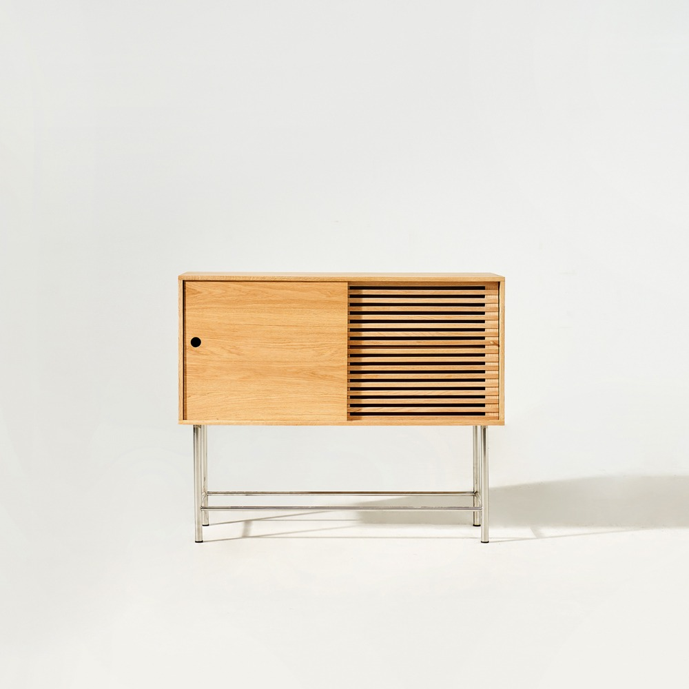
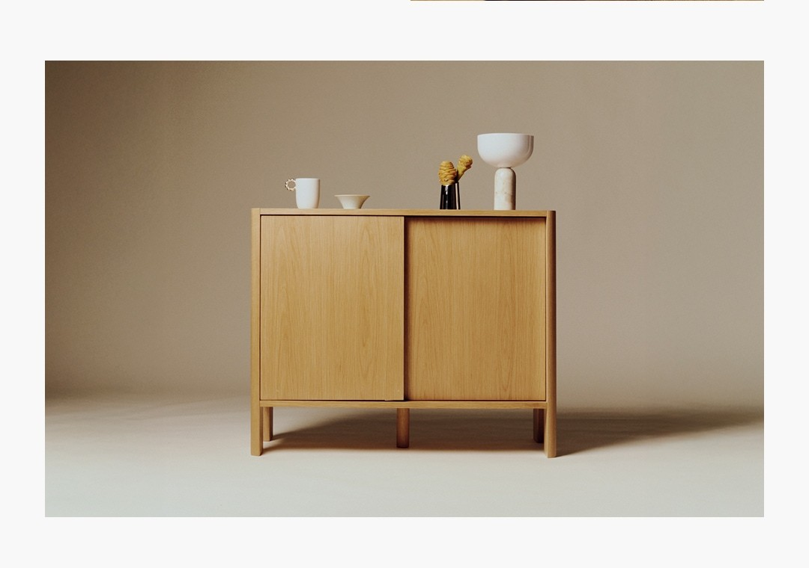

F안 · 새 오른쪽 수납장
코헨 유닛2 NO.2
110×40×90.3cm · 몸체50cm＋다리40.3cm
화이트오크 원목·무늬목, E0 MDF, 유광 스테인리스. 유리문이 아니라 평판과 가로 슬랫 미닫이문입니다.
440,000원
상품390,000원＋서울·수도권 배송50,000원
SKYTOWER 36B · OPTION F
왼쪽 무지 SUS L과2단 서랍 제품을 유지하고, 오른쪽을 코헨 유닛2 NO.2로 바꾼 별도 안이에요. 한쪽은 평판, 한쪽은 가로 슬랫인 미닫이문과 긴 스테인리스 다리가 포인트입니다.
F안3D 둘러보기사진 있는39품목 견적기존 E안과 A~D안은 그대로 유지합니다.


110×40×90.3cm · 몸체50cm＋다리40.3cm
화이트오크 원목·무늬목, E0 MDF, 유광 스테인리스. 유리문이 아니라 평판과 가로 슬랫 미닫이문입니다.
440,000원
상품390,000원＋서울·수도권 배송50,000원

E안보다72,000원 늘어요. 왼쪽 무지L·서랍·합배송510,900원과 오른쪽 코헨·배송440,000원을 합친 수납 코너 비용은950,900원입니다.
총39품목과 예비비30만원·큐커399,000원 계획비를 포함합니다. 냉장고·매트리스·청소기 본체, 커피 도구·트리·도자기 오브제·휴대용 인덕션 등 미정 비용은 별도입니다.
39품목 사진·가격 모두 보기 ↗코헨 공식 상단은 8~10주 배송을 안내합니다. 서울·수도권 주문 건당50,000원을 포함했지만 희망 입주일에 맞는 도착일은 판매자 확인이 필요합니다. 별도 설치비 표기는 없으며 사다리차·특수 반입 등 현장 추가 비용은 별도입니다.
무지2단 서랍은 품절 표시가81,900원을 예상 비용으로 넣었습니다. 선반·서랍 같은 날 합배송50,000원1회를 가정했고, 분리배송이면50,000원이 더 들어 총 5,085,100원입니다. 그 밖의 미확정 배송·설치비는 추가될 수 있습니다.
| 비교 항목 | E안 · 아레초930 | F안 · 코헨 유닛2 NO.2 |
|---|---|---|
| 오른쪽 수납장 크기 | 93×40×75cm | 110×40×90.3cm |
| 상품값 | 368,000원 | 390,000원 |
| 반영한 배송비 | 0원 | 50,000원 |
| 수납장＋배송 | 368,000원 | 440,000원 |
| 전체 구매 계획 | 4,963,100원 | 5,035,100원 · +72,000원 |
E의 아레초는 기존 계획액 기준입니다. 나머지38품목·예비비·큐커 계획비를 동일하게 유지한 비교이며, 두 안의 모든 상품을 오늘 가격으로 재검증한 것은 아닙니다.


배송8~10주가 가장 먼저 확인할 조건입니다. 실제 입주일까지 받을 수 있는지 판매자에게 확인한 뒤 주문하세요.
몸체 높이50cm가 내부 수납 높이를 뜻하지는 않습니다. LP를 세울 내부 유효 높이·깊이, 선반 조절·탈거 여부, 상판 허용 하중과 벽고정 필요 여부는 아직 미확인입니다.
턴테이블 깊이35.6cm만 보고 설치를 확정하지 않습니다. 덮개를 열 공간, 후면 배선과 스피커의 진동 전달도 확인해야 합니다. 무지 선반 역시 제품 설명서의 전도 방지 방법과 임대집 고정 허용을 확인해야 합니다.
실측을 적용한 집 구조와 냉장고·큐커 조건은 E안과 같습니다. 실측·가전 설치 검토 ↗